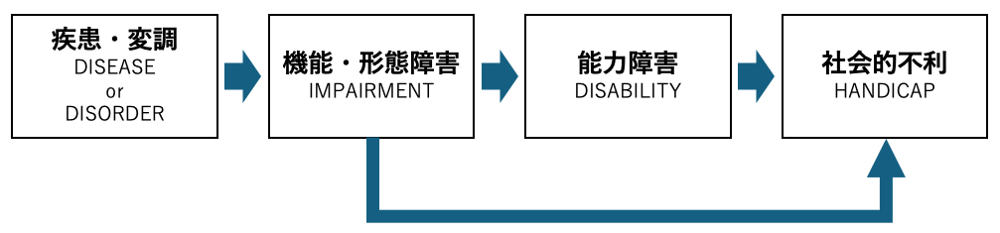
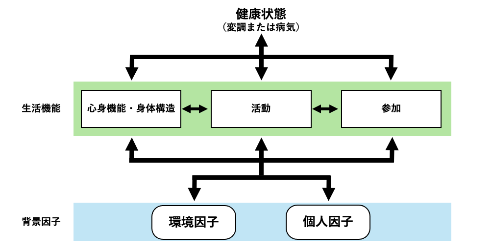

2 障害の捉え方
2.1 障害モデル
障害をどのようなものとして捉えるかによって，障害者への教育や支援のあり方は異なってきます。 障害の捉え方は大きく分けると医学モデルと社会モデルの2つがあるとされています。
2.1.1 障害の医学モデルと社会モデルとは
障害とは従来は個人が持っているものという考え方でした。 そこでは，障害は病気・外傷などから直接的に生じるものとして捉えられており，障害によって生じる問題は個人に原因があるとされます。 また，障害から生じる問題の解決のためには医療などの専門職による援助を必要とするものとされます。 こうした障害の捉え方を医学モデルと呼びます。
これに対して，障害はさまざまな社会的障壁によって作られるとする捉え方が1980年代のイギリスで登場しました。 イギリスの障害学の研究者であるオリバー（Oliver）は，障害によって生じる問題は，障害のある人のニーズに応えるための適切なサービスを提供できなかった社会の側に原因があると考え，社会モデルを提唱しました。 社会モデルでは，障害とは社会の中で生じるものなので，社会的な障壁を取り除くことで障害による不便を乗り越えようとします。
これらの違いをより具体的に考えてみましょう。 表 2.1には障害によって生じている問題の状況と，医学モデルと社会モデルにおけるそれぞれの問題解決の方向性の違いを示してあります。
| 状況 | 医学モデル | 社会モデル |
|---|---|---|
| Aさんは，足が動かず車椅子を利用中です。階段が登れないので，上の階へと移動できません。 | 足の機能を回復するための機能回復訓練を行って登れるようにする。 | エレベータやスロープを設置して，車椅子のままでも上の階へと移動できるようにする。 |
| Bさんは，視力に問題はないものの学習障害があり文字が読めません。そのため，教科書が読めず授業に参加することができません。 | 文字が読めるようにするための専門的な訓練をして，読字能力を鍛えて教科書を読めるようにする。 | デジタル教科書と音声読み上げ機能のあるパソコンを使って内容を理解し，授業に参加できるようにする。 |
近年ではこうした2つの捉え方を対立させるのでなく統合して捉えようとしており，それを統合モデルと呼ぶこともあります（これについては，第2.2節や第2.4.1項も参照してください）。
2.2 ICIDHとICF
前節の障害モデルはイギリスの障害学分野で発展した考え方でした。 それらとは別の障害を捉える枠組みとして，世界保健機構（WHO）が発表した国際障害分類（International Classification of Impairments, Disabilities and Handicaps, ICIDH）とその発展である国際生活機能分類（International Classification of Functioning, Disability and Health, ICF）はとても有名なものです。 以下では上田 （2005）のpp.7–28を参考にして，これらについて解説します。
2.2.1 ICIDH
ICIDHの考え方
WHOは1980年に発表したものがICIDHです。 ICIDHにおける障害の捉え方を示したものが図 2.1です。

図 2.1では，病気やけがなどからなる「疾患・変調」から右の「機能・形態障害」に矢印が行き，さらない，「能力障害」や「社会的不利」に矢印がつながっています。 ICIDHでは，「機能・形態障害」「能力障害」「社会的不利」の3つからなる全体を障害だと考えます。 「障害には3つの異なるレベルがある」という考えを打ち出したのがICIDHにおいて画期的だとされた点です。 以下では，障害の3つのレベルのそれぞれについて確認します。
「機能・形態障害」とは，これ自体が1つの言葉というよりは，機能障害と形態障害の2つを合わせた名称です。 ここで機能障害とは，例えば，脳卒中を発症してその結果として生じる言語障害などを指します。 形態障害とは，例えば，先天性疾患により一部の指がない場合や成長ホルモンの分泌不全による著しい低身長などがあてはまります。
「能力障害」とは，「流暢に会話ができない」「物を握ることができない」など，生活のさまざまな場面で必要とされる能力が低下している状態を指します。 例えば，先ほど例として挙げた指がない場合を考えてみると，指がないという形態障害により「筆記具を握れず，文字を書くのが困難」といった能力障害が引き起こされることとなります。 図 2.1の中に描かれる矢印は，このような障害のレベル間の関係を示唆しています。
「社会的不利」とは，就職の機会を失うとか経済的に困難な状況になる等のより広い範囲での社会参加における問題を指します。 先ほど例として挙げた「文字を書くことが困難」という能力障害は，文字を書くことが重要視される職業への就職において不利に働くだろうと想像ができます。
図 2.1では，機能・形態障害から社会的不利に直接矢印が伸びています。 ICIDHでは，能力障害は引き起こさないものの社会的不利につながるものの例として，形態障害である顔のあざが，就職や結婚における不利（社会的不利）につながるケースを挙げています（上田，2005, p. 11）。
ICIDHの背景
ICIDHが発表された背景には20世紀後半の社会の状況があります（上田，2002）。 この時代には高齢者の数が増加し，また戦争や災害による障害者の数も増加するといった現実がありました。
そうした現実の影響もありICIDHが発表される以前から障害者の人権尊重を求める運動は大きくなっていました。 実際，1971年には「精神薄弱者の権利宣言」が国連総会で採択され，そこでは「精神薄弱者は，最大限実行可能な限り，他の人びとと同じ権利を持っている」ことが宣言されています。 また，1975年には「障害者の権利宣言」が出されました。 そこでは，障害者は「その人間としての尊厳が尊重される生まれながらの権利を有している。障害者は，その障害の原因、特質及び程度にかかわらず、同年齢の市民と同等の基本的権利を有する。このことは，まず第一に，可能な限り通常のかつ十分満たされた相当の生活を送ることができる権利を意味する」とされています。
WHOによるICIDHはこれらの人権尊重の考え方を具現化する形で「試案」として発表されたものです。
ICIDHへの批判や誤解
ICIDHは「完全参加と平等」をテーマとする国際障害者年（1981年）の行動計画にも取り入れられ大きな影響力を持ちましたが，これに対する批判や誤解も多々ありました。 主な批判点として，以下のようなものが挙げられます（上田，2002）。
- ICIDHは「客観的な障害」に焦点を当てており，悩みや苦しみ，絶望などの「主観的障害」を十分に扱えていない
- マイナスを減らすことにのみ焦点を当てており，障害がある人のプラスの側面について焦点を当てていない
- 障害の状態は環境要因によって変わるが，それが考慮されていない
- 社会的不利の分類が不十分で，障害がある当事者の意見を聞かずに専門家が作ったものである
- これは誤解に基づく批判ではあるが，ICIDHの一方向的な矢印は，「機能・形態障害が不可避的・運命的に能力障害を引き起こし、それが運命的に社会的不利を引き起こすという運命論であり決定論である」というものである
なお，5点目については図 2.1だけを見るとたしかに，一方通行で逆戻りしないイメージを持ってしまいそうですがWHOはこの解釈を明確に否定しています。 実際にWHOによるICIDHの本文を見てみても，図が載っているページの近くに「逆方向に影響することがある（p.30）」と書いてあり，1993年の版の序文でも，障害を一方通行のものとして理解することが誤解であることが述べられています。
2.2.2 ICF
前項で紹介したICIDHは社会的不利を障害に含める等，画期的な点は多かったものの，批判やさまざまな誤解を受けました。 前節での批判に応える形で2001年のWHO第54回の総会で採択されたものが国際生活機能分類（ICF）です。
ICFの考え方
ICFにおける障害の捉え方を図 2.2に示しました。 ICFでは，個人の健康に関する情報を2つの部門に整理しています。第1部は「生活機能と障害」であり，第2部は環境因子と個人因子からなる「背景因子」です。 図 2.2では，中段の部分が「生活機能（と障害）」に対応しており，下段の部分を「背景因子」に対応しています。

まず中段の「生活機能（と障害）」ですが，これは3つの構成要素から成り立っています。 これらの構成要素は2つの方法で表現されます。 まず，健康状況に問題がない（中立的な）場合には，心身機能・身体構造，活動，参加で表されます。 この3つを包括して「生活機能（functioning）」と呼びます。
逆に健康状態に問題がある場合には3つの構成要素はそれぞれ，機能障害＜構造障害＞，活動制限，参加制約で表されます。 これら3つを包括する用語として「障害（disability）」が使われます。 この障害に対応する3つの要素は，ICIDHにおける機能・形態障害，能力障害，社会的不利を引き継いだものです。 これらは図中では省略されています。
ICFでは，これまでのICIDHのマイナス面を評価する枠組みを継承しながらも，個人の状態をマイナス面だけでなく，プラスの面まで含めて包括的に把握できるようにしたものだと言えます。 そうしたことからICFは「生きることの全体像」についての「共通言語」と呼ばれることもあります。
ICIDHからICFへの大きな変更点として，環境因子・個人因子という背景因子への注目が挙げられます。 図 2.2では下段にあたる部分にこの変更が反映されています。
環境因子や個人因子がモデルに含まれたことは，生活機能あるいは障害の状態像というのは，様々な要因に影響されるという考えを反映しています。 例えば，下半身が動かずに（機能障害），歩くことができず（活動制限），大学に通学できない（参加制約）という場面を想定してみたときに，車いすという道具があれば（環境因子），移動することができ（活動），学校へと通学できる（参加）といったように，環境因子によってその人の状態像は大きく変わります。 別の例をあげれば，読字障害（機能障害）がある学生が，授業の課題の文章を読めず（活動制限），学校での議論に参加できない（参加制約）場合に，音声読み上げ機能のあるパソコンやタブレットを用いて課題の内容を理解し（活動），学校での議論への参加（参加）できた場合を考えてみましょう。 この場合には，読んで理解するという能力障害の問題は解決していないが，聞いて理解するという本人の別の能力を用いた活動で，社会への参加が可能になっています。
これらの例から分かるように，環境因子や個人因子（本人の強み）に注目して状況を把握することで，その人の生活の状況をより詳細に考えることが可能となっています。 なお，こうした環境因子には支援器具などの用具から，家族や友人などの態度，サービスや制度などが含まれます1。
2.3 障害者権利条約と合理的配慮
近年の障害についての国際的動向の中で最も大きな影響を持つものが障害者の権利に関する条約（以下，障害者権利条約）です。 この条約は21世紀初の人権条約で，2006年に国連総会において採択されました。 日本政府は翌年2007年に署名をして，様々な国内法を整えた上で2014年に批准しています2。
この条約の採択以前にも1971年の「精神遅滞者の権利に関する宣言」3，1975年の「障害者の権利に関する宣言」，1982年の「障害者に関する世界行動計画」など，障害者の人権についての国際的な取り組みが行われてきており，一定の影響力を持ってきました。 しかし，これらの宣言や計画と障害者権利条約には大きな違いがあります。 それは障害者権利条約が締結国に対して法的な拘束力を持つことです。 この条約が国連総会において採択されたことは，各国の障害者に対する取り組みを推進する点で大きな意義があることでした。
2.3.1 障害者権利条約の特徴
障害者権利条約の特徴として（1）合理的配慮という概念の導入，（2）条約締結国のモニタリングの仕組みがあります。 1点目の合理的配慮の概念は，障害者教育を考える上でも特に重要なので次項で詳しく取り上げ，ここではモニタリングの仕組みについて説明します。
この条約には，条約で定められた事項を各国が実行しているかをモニタリング（チェック）する仕組みが規定に盛り込まれています。 具体的には，条約締結国は，締結後に条約の実施状況をまとめた報告書を作成して障害者権利委員会に報告することが求められています。 また報告書に対して出された懸念や疑問点に対して回答を行う必要が締結国にはあります。 その後に，委員会は総括所見を公開する形で各国における条約の実施状況がモニタリングされる仕組みになっています。
日本政府に対する総括所見は2022年に公開され，様々な領域にわたって90項目以上が改善するよう勧告されました4。 総括所見の日本政府による仮訳は外務省のウェブサイトで読むことができます。 なお，日本障害者協議会（Japan Council on Disability）は，ウェブサイト上に各国の国際審査の過程を日本語訳したものを掲載しています。 条約の実施状況のモニタリングの実際が知りたい人は見てみるとよいでしょう。
障害者権利条約の特色を表す言葉の一つが「私たちのことを私たち抜きに決めないで（Nothing about us without us!）」というスローガンです。 スローガンが示唆するように，従来，障害者に関することの決定にも拘らず，障害の当事者がその決定に関与できないことはしばしばありました。 実際，前節で紹介したICIDHの作成過程では研究者のみが関わり，障害がある当事者が作成に関与していないという批判がありした（上田，2002, pp. 15–16）。 そこで，障害者権利条約では障害当事者が実際に参加して条約の内容や表現について決めていきました。
日本では，障害者権利条約締結に向けた国内法の整備のために内閣に「障がい者制度改革推進本部」を設置し，障害者施策の推進に関する事項について意見を求めるための「障がい者制度改革推進会議」を設置しました。 このときの会議の構成員24名のうち14名が障害がある当事者やその家族でした。 これはスローガンにあるように障害者施策について障害者当事者が決めていくという条約の理念を反映したものでした。 当時の議事録は内閣府のHPですべて読めるので興味がある人はぜひ覗いてみると良いでしょう。
障害者権利条約における条約の実施状況のモニタリングの仕組みの中にパラレルレポート（あるいは代替報告や影の報告）と呼ばれるものがあります（佐藤，2017）。
パラレルレポートとは民間団体が障害者権利委員会に対して，各国の民間団体が提出する独自の報告のことを指し，そのためのガイドラインも示されています。 こうした仕組みのおかげで，条約締結国の政府による報告書だけでは明らかにできないデータを紹介しつつも，その国の障害者が国の取り組みをどのように評価しているかがモニタリングに含まれることになります。
「私たちのことを私たち抜きに決めないで」という理念はモニタリングの仕組みにも反映されていると言えるでしょう。
2.3.2 合理的配慮
障害者権利条約の特色の中で最も大きなものが，主要人権条約の中で初めて合理的配慮（reasonable accomodation）という文言を用い，さらに，合理的配慮を否定すること（合理的配慮の不提供）は差別であると明確に宣言したことです5。 この合理的配慮という概念は障害者の人権を保障する手段として極めて重要です。
障害者権利条約において，合理的配慮を提供しないことは障害者への差別に当たると考えられています。 日本では2013年に制定された「障害者を理由とする差別の解消の推進に関する法律」（以下， 差別解消法）において，学校や役所等の行政機関において合理的配慮の提供が法的義務となり，2021の同法の改正において一般の事業者においても義務化されました。
合理的配慮とは
内閣府が啓発用に発行しているリーフレット『「合理的配慮」を知っていますか？』では，合理的配慮の提供は次のように説明されています。
障害のある人は、社会の中にあるバリアによって生活しづらい場合があります。
この法律では、役所や事業者に対して、障害のある人から、社会の中にあるバリアを取り除くために何らかの対応を必要としているとの意思が伝えられたとき（※）に、負担が重すぎない範囲で対応すること（事業者においては、対応に努めること）を求めています。
※ 言語（手話を含む。）、点字、拡大文字、筆談、実物を示すことや身振りなどのサインによる合図、触覚など様々な手段により意思が伝えられることをいいます。通訳や障害のある人の家族、支援者、介助者、法定代理人など、障害のある人のコミュニケーションを支援する人のサポートにより本人の意思が伝えられることも含まれます。
この説明における1つ目のポイントは「社会の中にあるバリアを取り除くために何らかの対応を必要としているとの意思が伝えられたとき」の箇所です。 合理的配慮というのは，個別・具体的に何かしらのバリアを取り除くために提供されるものだということです。
合理的配慮は社会の中のバリアを取り除くという点ではバリアフリーやユニバーサルデザインなどと近いものもありますが，個別性という点で異なっています。 バリアフリーやユニバーサルデザインは，対象や状況を限定せずに誰に対しても（事前に）バリアを取り除いておくものなのに対して，合理的配慮は合理的配慮を申請する人が特定の具体的な場面で，その人のニーズに合致するように必要とする調整や変更である点で大きく違います。
説明の2つ目のポイントは「負担が重すぎない範囲で」の箇所です。 例えば，車椅子の利用者で2階にあるレストランへと入店できない人が，自分のためにエレベーターを設置してほしいと求めても，店にとっては負担が重すぎるため，この対応をする必要はありません。
ただし，この場合でも店側はレストランへと入店したいという障害のある人のニーズを汲み取った上でどのような対応なら可能かを話し合う必要があります。 障害がある人と事業者が行うこのような対話は建設的対話と呼ばれます。 「負担が重すぎない範囲で」というのは事業者が対応しないための言い訳にはならないので注意しましょう。
障害児教育について考えてみると，学校の文化によっては合理的配慮を検討する際に「前例がありません」や「特別扱いできません」といった理由（?）で，対応がなされないことがあります6。 しかし，こうした対応は内閣府が差別解消法の2021年の改正に際して作成したリーフレットにおいても，対話の際に避けるべき考え方として紹介されています。 合理的配慮は，障害のある人が教育を受ける権利を保障するものという基本的な考え方に立ち返って必要な対応を検討するべきでしょう。
内閣府のリーフレットを参照して，合理的配慮の具体例や建設的対話の具体例を確認してみましょう。
合理的配慮という語の「配慮」という語が日本語だと「やってあげる」ニュアンスを含むため，この訳語があまり適切でないのという議論があります。
小林・原田 （2013）は reasonable accomodation の意味を正しく表現するために「現実的な調整」「理性的かつ変化し得る妥協」「双方合意の適切な環境調整」「相互努力による適度な調整」といった訳語を提案しています。 この概念を理解するときには，「配慮」という言葉に引きづられないことが重要でしょう。
2.4 補足
2.4.2 理解を深めるための資料等（★）
- Educating Peter
1992年のアカデミー章短編ドキュメンタリー映画賞を受賞した作品です。 ダウン症がある小学校3年生ピーターが通常学級に転籍した1年のドキュメンタリー映像です。 最初は教室の中で問題を起こしていたピーターが適用して徐々に周りの児童たちを変えていった様子が描かれています。
障害がない子どもとある子どもが一緒に学ぶインクルーシブ教育のポジティブな面を象徴的に描く一方で，サクセスストーリとして描きすぎている，成功のために必要とされる人的な支援や環境的な支援について描かれていない等の批判もあったようです（水内，2023, p. 59）。
※ 設定ボタンから自動翻訳機能をつかって日本語字幕をつけることもできます。
厚生労働省のHPにICFの日本語版が掲載されているので，そこで環境因子にどのようなものがリストアップされているか見てみるとよいでしょう。↩︎
「署名」とは条約の趣旨や内容について基本的な賛意を表明することを意味します。 署名後には国会の承認を経て，条約に拘束されることについて国が同意を表明します。 このことを「批准」と言います（より正確には批准は締結の方法の一種です）。 批准後に条約の効力が発生します。↩︎
英語だとDeclaration on the Rights of Mentally Retarded Personsですが，精神遅滞（Mental Retardation）という用語は今は知的障害（disorders of intellectual development）に置き換えられるようになってきていますので，1971年のこの宣言についても「知的障害者の権利に関する宣言」と書かれていることもあります。↩︎
NPO法人DPI日本会議，障害者権利委員会から日本政府へ勧告（総括所見）が出されました！ ～90項目以上改善するよう勧告されています～ （アクセス年月日：2024年8月22日）↩︎
川島 他 （2016, p. 22）によればこの用語はもともと1960年代半ばのアメリカや1980年代半ばのカナダで宗教差別に関連した用語として使われ始めました。 その後，1990年の「障害をもつアメリカ人法（Americans with Disabilities Act of 1990）」によって世界に広がりました。↩︎
以前，特別支援教育に関する巡回相談の仕事をしていたときに実際にこのような反応をされることは多かったです。↩︎